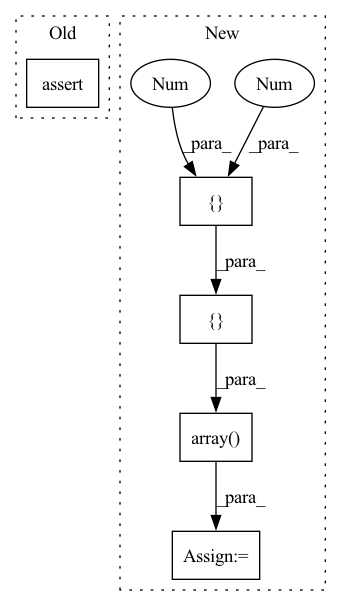

Pattern ID :10291
Before Change
def test_padded_matrix():
d = Doc("Ali topu tut. Ömer ılık süt iç.")
assert np.all(d.padded_matrix(True, False) == np.array([[2, 3744, 9290, 2535, 18, 3, 0],
[2, 6565, 17626, 5244, 2032, 18, 3]]))
assert torch.all(d.padded_matrix(return_mask=False) == torch.tensor([[2, 3744, 9290, 2535, 18, 3, 0], // noqa // pylint: disable=not-callableAfter Change
inp = np.array([[2, 3744, 9290, 2535, 18, 3, 0],
[2, 6565, 17626, 5244, 2032, 18, 3]])
mask = np.array([ [1, 1, 1, 1, 1, 1, 0],
[ 1, 1 , 1, 1 , 1, 1, 1)
res = d.padded_matrix(return_numpy, return_mask)
if return_numpy:In pattern: SUPERPATTERN
Frequency: 4
Non-data size: 5
Instances Fragment ID: 36228136
Project Name: globalmaksimum/sadedegel
Commit Name: 5851b3d8a3ffbc0267367b3d351a1d606b1b1d7d
Time: 2020-07-31
Author: husnu.sensoy@globalmaksimum.com
File Name: tests/test_buildingblocks.py
M Class Name: AnonimousClass
N Class Name: AnonimousClass
M Method Name: test_padded_matrix(2)
N Method Name: test_padded_matrix(0)
M Parent Class:
N Parent Class:
M File Name: tests/test_buildingblocks.py
N File Name: tests/test_buildingblocks.py
M Start Line: 18
M End Line: 22
N Start Line: 29
N End Line: 53
Before Change
[0, 0, 2]
]
assert true_pillar_matrix == pillar_matrix
if __name__ == "__main__":After Change
points, indices = create_pillars(points, grid_cell_size=grid_cell_size, x_min=x_min, x_max=x_max,
y_min=y_min, y_max=y_max, z_min=z_min, z_max=z_max)
true_indices = np.array([ [0, 0],
[0, 0],
[0 , 1 ],
[2, 2],
[2, 2],
[1, 2]
)
assert np.all(indices == true_indices)
Fragment ID: 36228106
Project Name: jabb0/fastflow3d
Commit Name: fa5213b611fd96c6e2df69f237b25e47cca3be34
Time: 2021-06-13
Author: aron.distelzweig@hotmail.com
File Name: tests/test_pillar.py
M Class Name: AnonimousClass
N Class Name: AnonimousClass
M Method Name: test_create_pillars(0)
N Method Name: test_create_pillars(0)
M Parent Class:
N Parent Class:
M File Name: tests/test_pillar.py
N File Name: tests/test_pillar.py
M Start Line: 9
M End Line: 34
N Start Line: 9
N End Line: 38
Before Change
assert rotated.all() == boxes.all()
// Angle < 1:
rotated = geometry.rotate_boxes(boxes, angle=0.5)
assert rotated.all() == boxes.all()
// Angle = 30
rotated = geometry.rotate_boxes(boxes, angle=30)
assert rotated.shape == (1, 5)After Change
assert rotated.shape == (1, 6)
assert rotated[0, 4] == 30.
boxes = np.array([ [ 0., 0. , 0.6 , 0.2, 0.5)
// Angle = -90:
rotated = geometry.rotate_boxes(boxes, angle=-90, orig_shape=(1, 1), min_angle=0)
assert np.allclose(rotated, np.array([[0.9, 0.3, 0.6, 0.2, -90., 0.5]]))
// Angle = 90
rotated = geometry.rotate_boxes(boxes, angle=+90, orig_shape=(1, 1), min_angle=0)
assert np.allclose(rotated, np.array([[0.1, 0.7, 0.6, 0.2, +90., 0.5]]))
Fragment ID: 36228128
Project Name: mindee/doctr
Commit Name: 83828964251fd5daad5f749155515e0bf7ec011c
Time: 2021-12-06
Author: 33607785+Rob192@users.noreply.github.com
File Name: tests/common/test_utils_geometry.py
M Class Name: AnonimousClass
N Class Name: AnonimousClass
M Method Name: test_rotate_boxes(0)
N Method Name: test_rotate_boxes(0)
M Parent Class:
N Parent Class:
M File Name: tests/common/test_utils_geometry.py
N File Name: tests/common/test_utils_geometry.py
M Start Line: 42
M End Line: 45
N Start Line: 91
N End Line: 115
Before Change
x = {"theta": [1.0], "theta_radial": [0.5]}
with pytest.raises(RuntimeError) as excinfo:
Angle.x_prime_log_prior(reparam, x)
assert "Prime prior" in str(excinfo.value)
def test_both_parameters():After Change
def test_x_prime_log_prior(reparam):
"Assert the underlying functions is called correctly
x_prime = numpy_array_to_live_points(
np.array([ [1.0 , -1.0 ]) , ["x", "y"]
)
reparam._k = 0.5
reparam._prime_prior = MagicMock(return_value=0.5)
reparam.has_prior_prior = True
reparam.prime_parameters = ["x", "y"]
out = Angle.x_prime_log_prior(reparam, x_prime)
reparam._prime_prior.assert_called_once_with(
x_prime["x"], Fragment ID: 36227924
Project Name: mj-will/nessai
Commit Name: b53fe855e019f16687e61e99ebb0249d9efb969a
Time: 2022-01-25
Author: michaeljw1@googlemail.com
File Name: tests/test_reparameterisations/test_angle.py
M Class Name: AnonimousClass
N Class Name: AnonimousClass
M Method Name: test_x_prime_log_prior(1)
N Method Name: test_x_prime_log_prior(1)
M Parent Class:
N Parent Class:
M File Name: tests/test_reparameterisations/test_angle.py
N File Name: tests/test_reparameterisations/test_angle.py
M Start Line: 153
M End Line: 157
N Start Line: 155
N End Line: 171